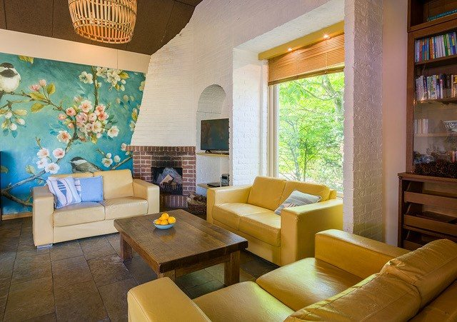
De Tapuit
Vakantiehuis met eet- en zitkamer, open haard en zicht op het privé terras en de speeltuin.
25 tot 30 personenMeer info
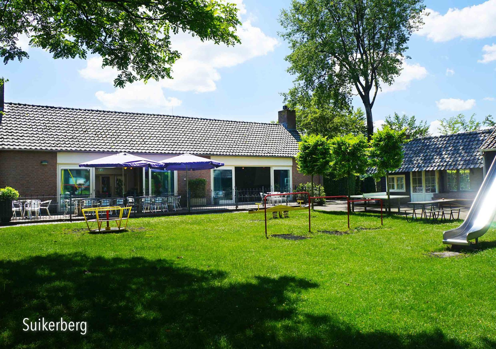
Groepsaccommodatie in Loon op Zand voor families en vriendengroepen tot 50 personen, met 16 slaapkamers, een speelkamer en een speeltuin aan het terras.
We ontvangen vooral families en vriendengroepen met kinderen. Logeren kan voor 25 tot 50 personen, en voor een dagje samen is er Meneer Powell.

Vakantiehuis met eet- en zitkamer, open haard en zicht op het privé terras en de speeltuin.
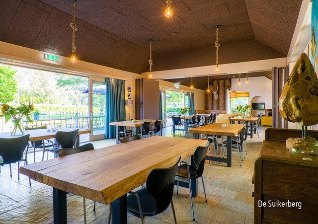
Samen eten aan boomtafels, 2 zithoeken met open haard en een terras op het zuiden aan de speeltuin.
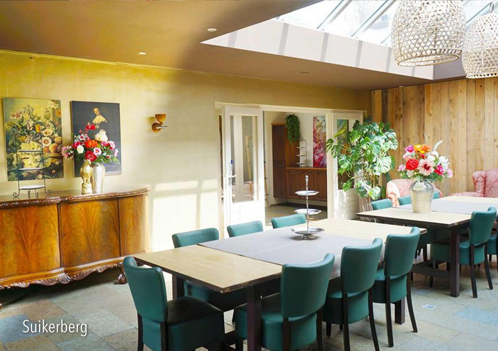
Een gezellig huis voor een familiedag, verjaardag, workshop of teamuitje, met privé terras op het zuiden.
Terwijl de volwassenen op het terras zitten, kunnen de kinderen in de speeltuin of de speelkamer terecht.
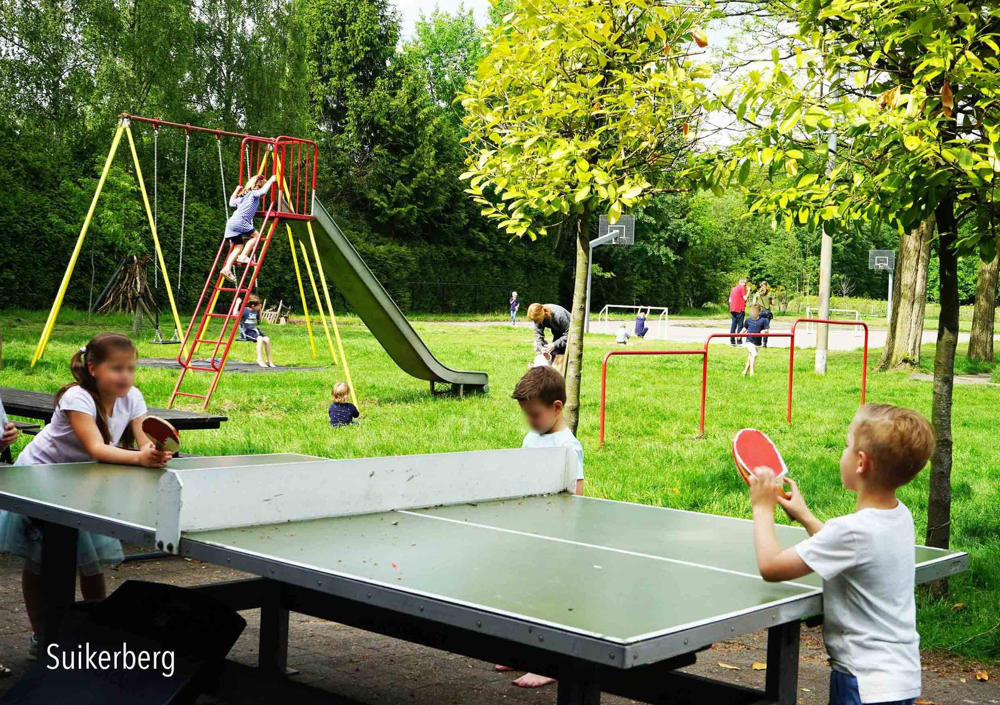
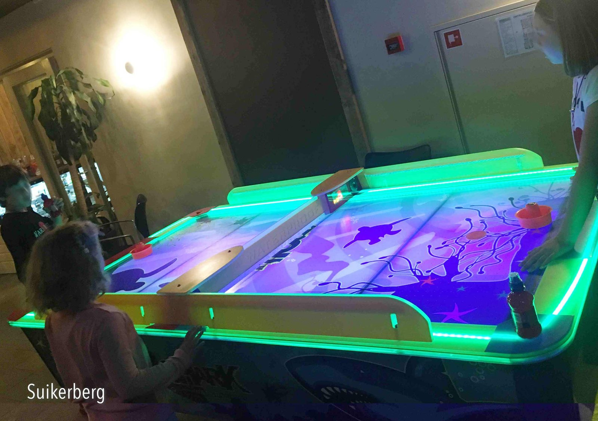
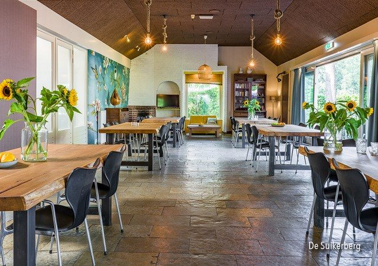
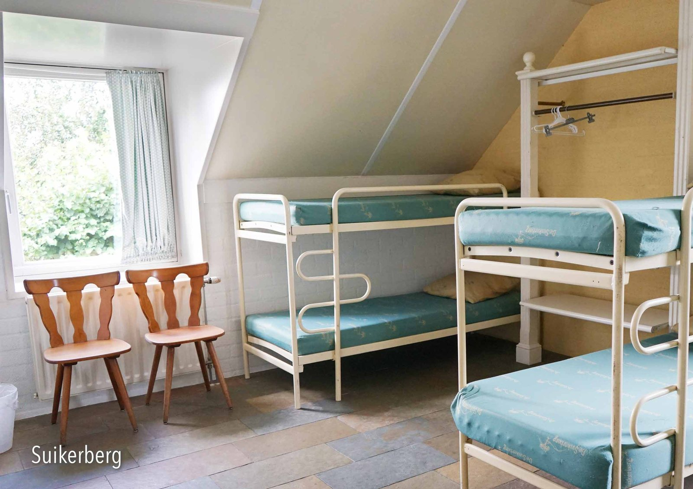
In ons tuinhuis staat een houtgestookte pizzaoven en een werkbank om het deeg te maken en je pizza naar eigen smaak te beleggen. Vegetarisch, zoutarm of andere wensen: iedereen maakt zijn eigen pizza.
Er kunnen 2 pizza's tegelijk in de oven en na 1,5 à 2 minuten zijn ze klaar. Ook bij slecht weer, en vanuit het tuinhuis zie je de speeltuin en het zonneterras.
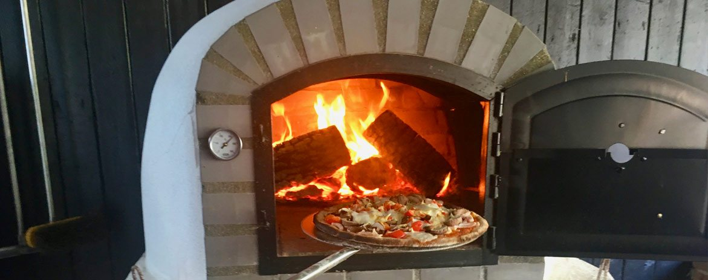
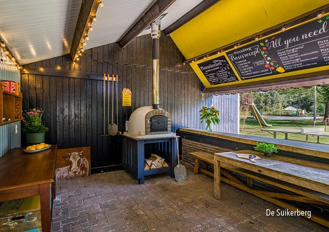
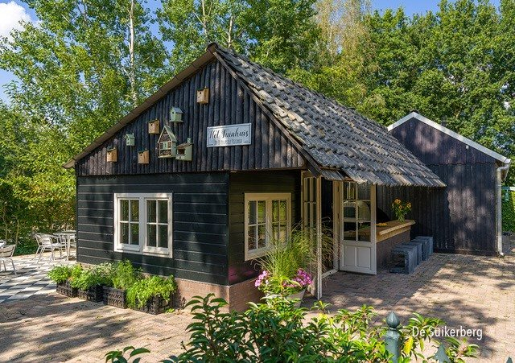
De Suikerberg ligt direct aan het Nationaal Park. Wandelen, fietsen, mountainbiken of de huifkar laten voorrijden: het begint bij de deur.
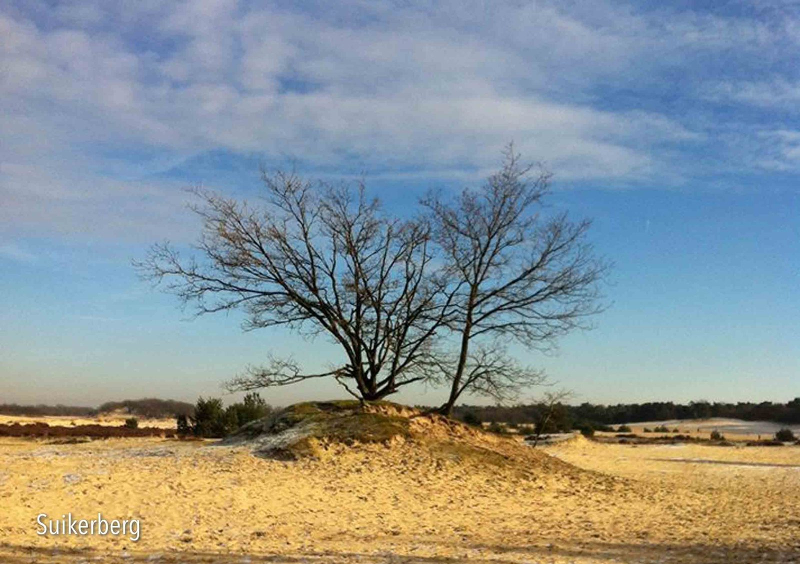
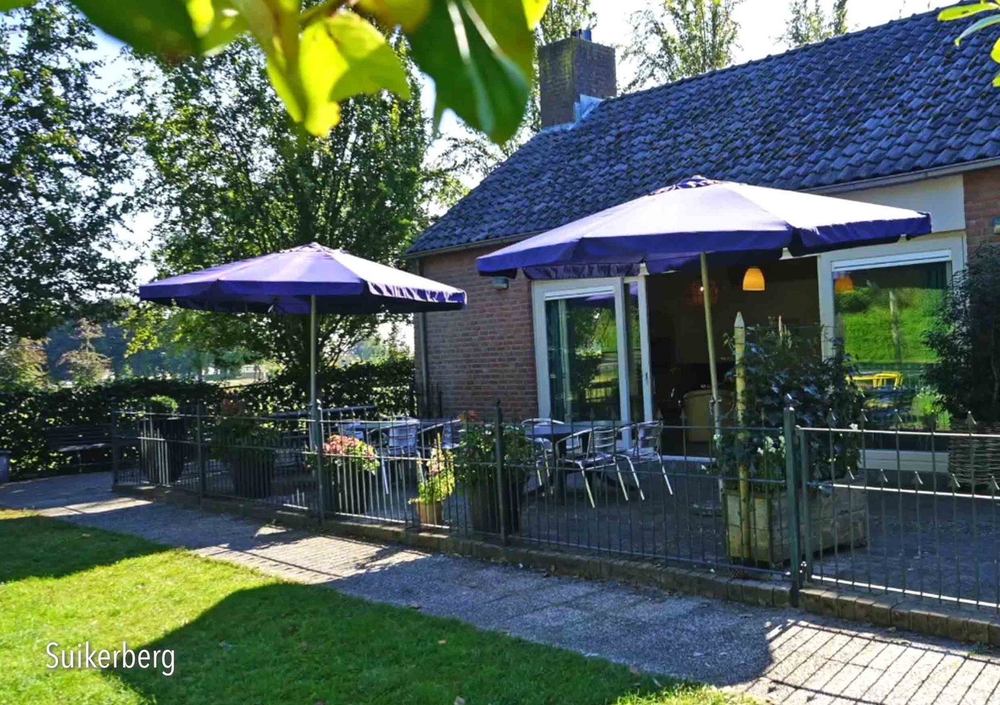
De huizen zijn rolstoelvriendelijk en hebben een professionele keuken, zodat je met een grote groep makkelijk samen kookt. Buiten is een overkapping met BBQ.
Vul je data in en stuur het via WhatsApp, of bel ons gerust. We laten je weten wat er kan.
Meneer Powell komen bekijken? Dat kan op afspraak.